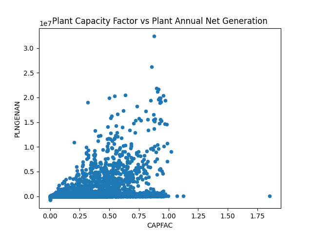

<table border="1" class="dataframe">
  <thead>
    <tr style="text-align: right;">
      <th></th>
      <th>SEQPLT16</th>
      <th>CAPFAC</th>
      <th>PLNGENAN</th>
    </tr>
  </thead>
  <tbody>
    <tr>
      <th>count</th>
      <td>9709.000000</td>
      <td>8038.000000</td>
      <td>8.038000e+03</td>
    </tr>
    <tr>
      <th>mean</th>
      <td>4855.000000</td>
      <td>0.274651</td>
      <td>5.070070e+05</td>
    </tr>
    <tr>
      <th>std</th>
      <td>2802.891216</td>
      <td>0.238366</td>
      <td>1.880041e+06</td>
    </tr>
    <tr>
      <th>min</th>
      <td>1.000000</td>
      <td>0.000000</td>
      <td>-7.686200e+05</td>
    </tr>
    <tr>
      <th>25%</th>
      <td>2428.000000</td>
      <td>0.064125</td>
      <td>2.948750e+03</td>
    </tr>
    <tr>
      <th>50%</th>
      <td>4855.000000</td>
      <td>0.226700</td>
      <td>1.721800e+04</td>
    </tr>
    <tr>
      <th>75%</th>
      <td>7282.000000</td>
      <td>0.408400</td>
      <td>1.568880e+05</td>
    </tr>
    <tr>
      <th>max</th>
      <td>9709.000000</td>
      <td>1.855000</td>
      <td>3.237748e+07</td>
    </tr>
  </tbody>
</table>

